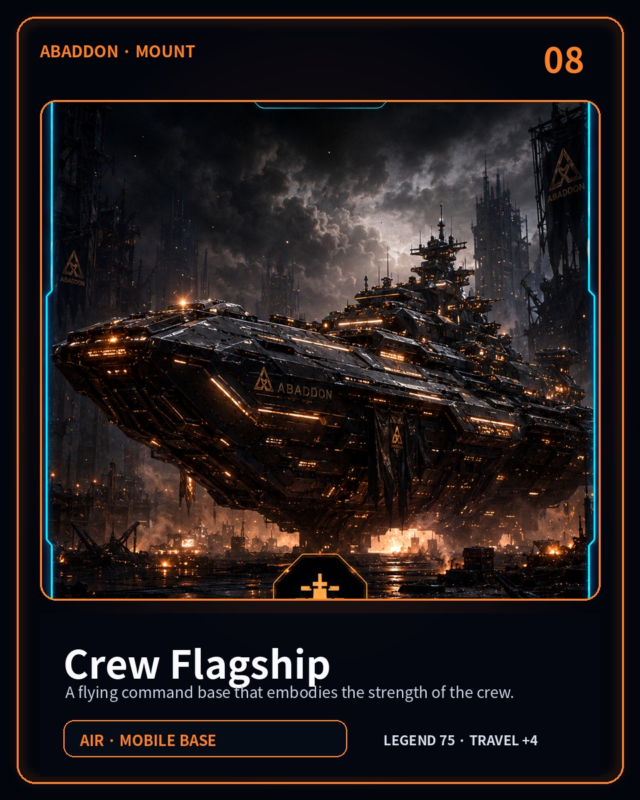
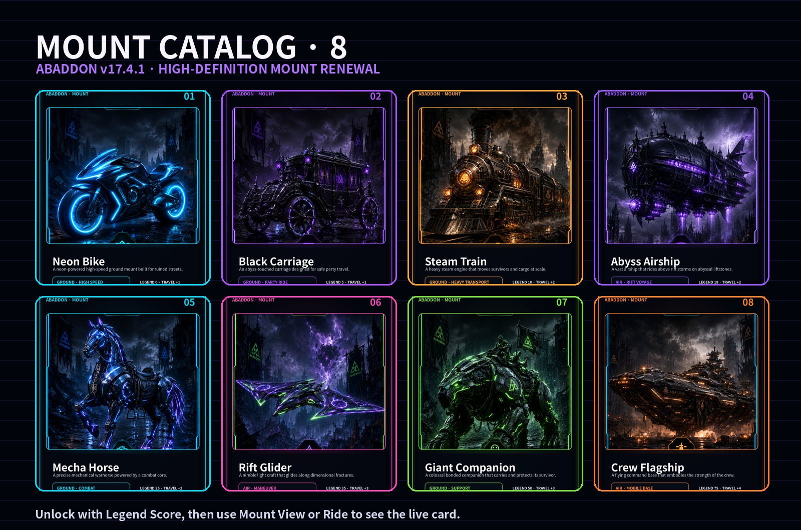
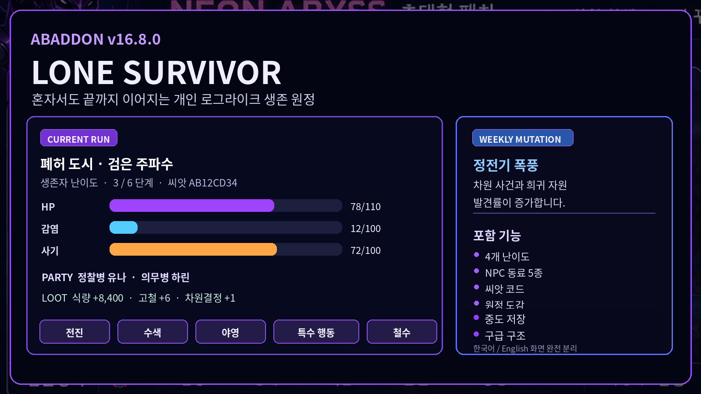
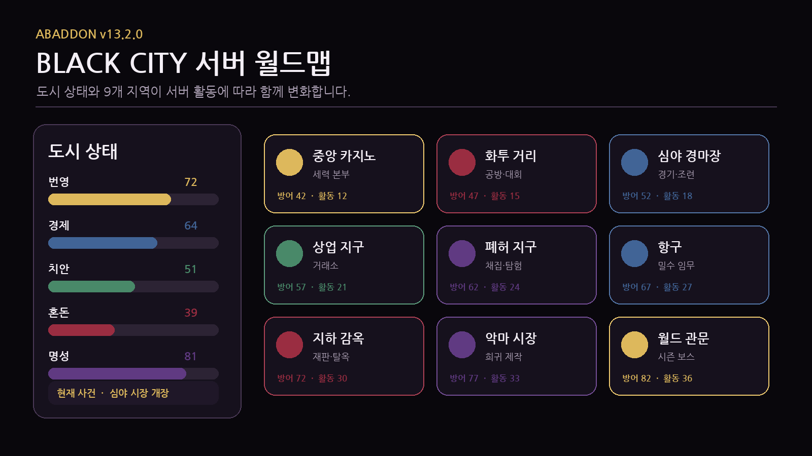

Story · FINAL ECLIPSE
Choices from Seasons 1–6 and the final server battle shape the ending of your world.
Core commands →ABADDON is a Discord apocalypse RPG where story, a living world, expeditions, crafting, city building, NPC relationships, casino games and a server-wide finale feed into one persistent world.

Instead of dumping hundreds of commands onto the homepage, these six pillars explain the game. Use !help in Discord for the full command hub.
Choices from Seasons 1–6 and the final server battle shape the ending of your world.
Core commands →Weather, regional danger, world events and contracts create a different survival loop each day.
Expedition commands →Turn gathered materials into equipment and city parts, then feed that progress back into combat.
Gameplay commands →City parts affect markets, expeditions, recovery and the wider world instead of being pure decoration.
Explore BLACK CITY →Affinity, trust, betrayal, faction reputation, museums and community seasons preserve your history.
Social commands →Casino and general gambling stay separated, alongside card tables, racing and side activities.
Game commands →ABADDON is built around connected progression, not a pile of isolated commands.
Only a few representative screens remain on the homepage. Discover the rest in game.





Add ABADDON, type !start or !newcomer, choose your language, and follow the terminal's next-action guidance.